Clase 7: Calor de Reacción y Entalpías de Formación
La primera ley aplicada a reacciones químicas: el calor de reacción como diferencia de entalpías, el problema de tener más incógnitas que ecuaciones, y cómo las entalpías de formación en estado estándar lo resuelven.
Temas que cubre
- Procesos exotérmicos y endotérmicos: convenio de signos del calor
- Aplicación de la primera ley al calor de reacción
- $\Delta H$ de reacción como diferencia entre entalpías de productos y de reactivos
- El problema: cuatro entalpías absolutas desconocidas y una sola ecuación
- Reacciones de formación: definición y ejemplos
- Por qué $\Delta H$ de reacción no depende de las entalpías de los elementos
- Escala arbitraria: asignar cero a los elementos en su forma más estable
- Estado estándar: 1 atm y 298,15 K
- Entalpía estándar de formación $\Delta H_f^\circ$ y su tabulación
- Casos de alotropía: $\mathrm{O_2}$ vs. $\mathrm{O_3}$, grafito vs. diamante
- Dependencia de $H^\circ$ con la temperatura
Conceptos clave
Exotérmico y endotérmico
Una reacción cambia la temperatura del sistema; recuperar la $T$ inicial implica un flujo de calor. Exotérmico ($Q < 0$): el sistema entrega calor al entorno. Endotérmico ($Q > 0$): el entorno debe suministrar calor al sistema.
El calor de reacción es $\Delta H$
Como la mayoría de las reacciones se hacen a presión atmosférica constante, el calor medido es directamente $\Delta H = H_{\text{final}} - H_{\text{inicial}}$. Y como $H$ es extensiva, se suma sobre todas las especies con sus coeficientes estequiométricos.
El problema de las incógnitas
Escribir $\Delta H$ como diferencia de entalpías molares absolutas deja cuatro incógnitas y una ecuación. Ninguna entalpía absoluta es medible — sólo diferencias. Hay que romper el problema de otro modo.
Reacción de formación
La que produce un mol de un compuesto a partir de sus elementos puros en sus estados estables de agregación. Escribir cada compuesto vía su reacción de formación permite que las entalpías de los elementos se cancelen a ambos lados.
La escala arbitraria
Como $\Delta H$ de cualquier reacción es independiente de los valores numéricos asignados a los elementos, se les puede asignar cualquier valor conveniente. Se elige cero, a 1 atm y 298,15 K. Todas las entalpías tabuladas cuelgan de esa convención.
Forma más estable
El cero se asigna a la forma más estable del elemento: $\Delta H_f^\circ(\mathrm{O_2}) = 0$ pero $\Delta H_f^\circ(\mathrm{O_3}) = 142$ kJ/mol; $\Delta H_f^\circ(\mathrm{C_{grafito}}) = 0$ pero $\Delta H_f^\circ(\mathrm{C_{diamante}}) = 1{,}90$ kJ/mol. El estado de agregación importa: $\mathrm{H_2O}(l)$ y $\mathrm{H_2O}(g)$ tienen valores distintos.
Fórmulas fundamentales


Qué hay que entender
- El truco central: las entalpías absolutas no son medibles, pero se cancelan al escribir la reacción vía reacciones de formación. Por eso la tabla de $\Delta H_f^\circ$ resuelve todo.
- $\Delta H_f^\circ = 0$ sólo para elementos en su forma más estable a 298,15 K y 1 atm. El ozono, el diamante y el azufre monoclínico no valen cero.
- Anotar siempre el estado de agregación: $\Delta H_f^\circ(\mathrm{H_2O}, l) = -285{,}8$ kJ/mol y $\Delta H_f^\circ(\mathrm{H_2O}, g) = -241{,}8$ kJ/mol difieren justo en el calor de vaporización.
- La fórmula $\Delta H^\circ = \sum\nu\Delta H_f^\circ(\text{prod}) - \sum\nu\Delta H_f^\circ(\text{reac})$ es "productos menos reactivos". Invertir el orden invierte el signo — y el signo es la respuesta a si la reacción libera o consume calor.
- Invertir una reacción cambia el signo de $\Delta H$; multiplicarla por un factor multiplica $\Delta H$ por ese factor. $H$ es extensiva.
- Exotérmico $\Leftrightarrow \Delta H < 0$: el sistema pierde entalpía y el entorno se calienta.